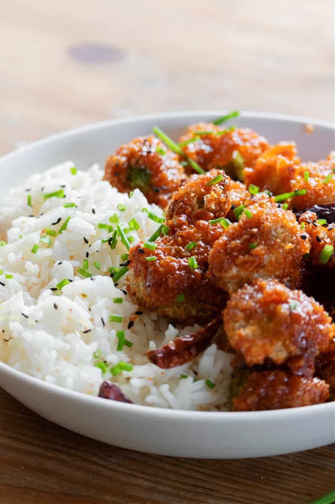

Firecracker Brussels Sprouts
Home

Description
Brussels sprouts are one of our favorite options when we're looking for something that's filling and
healthy! This recipe brings a lot of heat, and a ton of flavor. It may take a few tries to get the spice
levels right (I made it WAY too hot the first time!). Be sure to make enough sauce for leftovers!
Ingredients
For the Brussels Sprouts
- 1 c non-dairy unsweetened milk (we use shelf stable almond milk for cooking)
- 1 tsp rice wine vinegar (sub for another type if you don't have rice wine)
- 3/4 c all-purpose flour
- 1/2 c corn starch
- 1 tsp low sodium soy sauce
- 2 tsp Sriracha
- 2 c Panko bread crumbs
- 1 lb brussels sprouts
For the Sauce
- 1 c Sriracha
- 1 1/2 c brown sugar
- 4 tsp rice wine vinegar
- 1 tsp soy sauce
Steps
- Preheat over to 425 degrees
- Whisk milk and vinegar for the brussels sprouts together in a small bowl and set aside
- In a large mixing bowl, whisk flour and corn starch
- Pour the milk/vinegar mixture into the flour/corn starch along with the soy sauce and sriracha for the brussels. Whisk to create a wet batter
- Pour the panko in a separate bowl
- Trim the stems from brussels sprouts. For a crispier sprout, cut them in half.
- Dip each sprout into the wet batter, coat with panko, then place on a greased baking sheet
- Once all sprouts have been breaded, lightly spray/brush the tops of the sprouts with more oil. This will aid in crisping them in the oven
- Bake for about 20 mins, flipping half way through
- While the sprouts bake, mix all the sauce ingreients together and add them to a small sauce pan
- Bring the sauce to a simmer over medium heat, then reduce to low. SImmer for about 5 mins, whisking constantly to prevent burning. Remove from heat
- When the sprouts are done, add them to a large mixing bowl and pour half of the sauce over the top and toss to coat
- Serve immediately, goes great with rice
Additional Notes
- I doubled the sauce measurements to allow extra sauce for dipping. We've found that the brussels absorb the sauce quickly. Alternatively, you can leave the brussels unsauced and dip as you go, to keep the leftovers crunchy.
- If you want to step up the heat even more, use Sriracha garlic sauce.
- This can easily be made without the spice too! Just sub your favorite sauce ingredients for the sriracha.